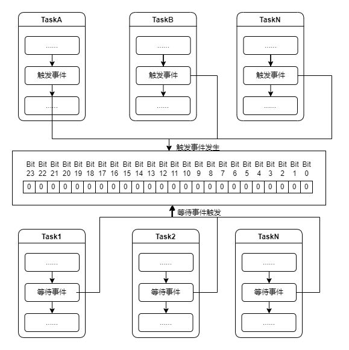

<!DOCTYPE lake>
<h2 data-lake-id="okuC0" id="okuC0"><span data-lake-id="ubb657796" id="ubb657796">学习目标</span></h2><ol list="u3b94adc0"><li data-lake-id="u75e0d324" fid="ue5745764" id="u75e0d324"><span data-lake-id="u05a92c6c" id="u05a92c6c">理解什么是事件组</span></li><li data-lake-id="u5d4e33ba" fid="ue5745764" id="u5d4e33ba"><span data-lake-id="u135e34a4" id="u135e34a4">理解事件组标志位</span></li><li data-lake-id="u0b99f66e" fid="ue5745764" id="u0b99f66e"><span data-lake-id="u7edd2fd7" id="u7edd2fd7">掌握事件组开发流程</span></li></ol><h2 data-lake-id="pYx33" id="pYx33"><span data-lake-id="ue8e08070" id="ue8e08070">学习内容</span></h2><h3 data-lake-id="UK2Bb" id="UK2Bb"><span data-lake-id="u845e398b" id="u845e398b">概念</span></h3><p data-lake-id="u956cfc2f" id="u956cfc2f"><span data-lake-id="ue81b3049" id="ue81b3049">在FreeRTOS中，事件组（Event Group）是一种用于任务间同步和通信的机制。事件组允许任务等待和检测多个事件的状态，并在事件发生时进行通知。</span></p><p data-lake-id="uc53054c7" id="uc53054c7"><span data-lake-id="u6a92296b" id="u6a92296b">​</span><br/></p><p data-lake-id="u6983cfe2" id="u6983cfe2"><span data-lake-id="uebca0ceb" id="uebca0ceb">事件组由一组标志位（或事件位）组成，每个标志位代表一个特定的事件。任务可以等待某些标志位被置位或清除，也可以设置或清除标志位。</span></p><p data-lake-id="ufa188f3d" id="ufa188f3d"><span data-lake-id="ubcfe4313" id="ubcfe4313">​</span><br/></p><p data-lake-id="ud3aa8b69" id="ud3aa8b69"><span data-lake-id="uc602f0ba" id="uc602f0ba">以下是事件组的一些关键概念：</span></p><p data-lake-id="u332dc1a1" id="u332dc1a1"><span data-lake-id="uf1f98210" id="uf1f98210">​</span><br/></p><ol list="ue53bac87"><li data-lake-id="u7e03594d" fid="u60a89f15" id="u7e03594d"><span data-lake-id="uec55cfd3" id="uec55cfd3">事件组句柄（Event Group Handle）：</span></li></ol><p data-lake-id="u0fe76a0f" id="u0fe76a0f" style="padding-left: 2em"><span data-lake-id="uad06b868" id="uad06b868">事件组句柄是用于标识和操作事件组的变量。它可以在创建事件组时由FreeRTOS分配，也可以通过函数返回。</span></p><ol list="u8ca36e9c" start="2"><li data-lake-id="u61921395" fid="u11b30471" id="u61921395"><span data-lake-id="ubb93a4ea" id="ubb93a4ea">标志位（Event Bit）：</span></li></ol><p data-lake-id="u9984aeb7" id="u9984aeb7" style="padding-left: 2em"><span data-lake-id="u14bf437b" id="u14bf437b">标志位是事件组中的单个位，它表示一个特定的事件。每个标志位可以被置位或清除，以表示事件发生或未发生。</span></p><p data-lake-id="ua04ae7d6" id="ua04ae7d6" style="padding-left: 2em"><span data-lake-id="uab6a0d65" id="uab6a0d65">标志位通常用二进制位来表示，如第0位、第1位等。可以使用位操作函数进行置位和清除操作。</span></p><ol list="udb633c8f" start="3"><li data-lake-id="u5a00e268" fid="u8d8a144a" id="u5a00e268"><span data-lake-id="u9d94e41c" id="u9d94e41c">等待事件（Waiting Events）：</span></li></ol><p data-lake-id="u3f9b9f14" id="u3f9b9f14" style="padding-left: 2em"><span data-lake-id="uf1613df1" id="uf1613df1">任务可以通过等待事件组中的一个或多个标志位来暂停执行，直到这些标志位满足特定的条件。</span></p><p data-lake-id="u57fc8a55" id="u57fc8a55" style="padding-left: 2em"><span data-lake-id="udb7e6d57" id="udb7e6d57">等待事件可以通过函数如xEventGroupWaitBits()、xEventGroupSync()等实现。</span></p><ol list="ub1e04d1d" start="4"><li data-lake-id="ud292aafe" fid="u4afcacd5" id="ud292aafe"><span data-lake-id="u63f8660e" id="u63f8660e">通知事件（Signaling Events）：</span></li></ol><p data-lake-id="ud4cdfa15" id="ud4cdfa15" style="padding-left: 2em"><span data-lake-id="u6733c993" id="u6733c993">任务可以通过设置或清除事件组中的标志位来通知其他任务事件的发生。</span></p><p data-lake-id="ud07b2b2a" id="ud07b2b2a" style="padding-left: 2em"><span data-lake-id="u7aa1d988" id="u7aa1d988">通知事件可以通过函数如xEventGroupSetBits()、xEventGroupClearBits()等实现。</span></p><p data-lake-id="ubb295754" id="ubb295754"><span data-lake-id="u27f0ebe4" id="u27f0ebe4">通过使用事件组，任务可以进行有效的同步和通信，实现复杂的任务调度和协调。任务可以等待多个事件同时发生，也可以通过设置或清除标志位来触发其他任务的执行。</span></p><p data-lake-id="u39546123" id="u39546123"><span data-lake-id="u0efd8004" id="u0efd8004">请注意，事件组是FreeRTOS中的一个特性，具体的使用方法和函数可能因不同的FreeRTOS版本而略有差异。建议参考相关的FreeRTOS文档和参考资料以获取更详细和准确的信息。</span></p><h3 data-lake-id="AIsgZ" id="AIsgZ"><span data-lake-id="u1f953c37" id="u1f953c37">事件标志位</span></h3><p data-lake-id="uee8fd7d9" id="uee8fd7d9"></p><ol list="u7d348468"><li data-lake-id="u3a0c3b77" fid="ubd158a32" id="u3a0c3b77"><span data-lake-id="u13c55e8d" id="u13c55e8d">事件标志为一个32位的数字。也就是采用</span><code data-lake-id="ub77ad7cf" id="ub77ad7cf"><span data-lake-id="u72a2e010" id="u72a2e010">uint32_t</span></code><span data-lake-id="u2bc54393" id="u2bc54393">来记录事件状态。</span></li><li data-lake-id="u59668559" fid="ubd158a32" id="u59668559"><span data-lake-id="ufeb43653" id="ufeb43653">32位的状态分为高8位和低24位。</span></li><li data-lake-id="uc27966a2" fid="ubd158a32" id="uc27966a2"><span data-lake-id="u0d357504" id="u0d357504">高8位位系统级事件和状态，由操作系统自行管理，无需开发人员关系。</span></li><li data-lake-id="u25c3a0f5" fid="ubd158a32" id="u25c3a0f5"><span data-lake-id="uc87ecd72" id="uc87ecd72">低24位表示24种事件，每1个bit位表示一种事件，由开发人员控制这些事件位。</span></li><li data-lake-id="u78a9ee37" fid="ubd158a32" id="u78a9ee37"><span data-lake-id="u6d4c7f2d" id="u6d4c7f2d">低24位中，每一位的取值是0或者1，0表示当前位对应的事件没有触发，1表示当前位的事件触发了。</span></li></ol><h3 data-lake-id="UAoXw" id="UAoXw"><span data-lake-id="u4c269548" id="u4c269548">开发流程</span></h3><ol list="ub060b9ce"><li data-lake-id="ude4263ec" fid="ua0e8c882" id="ude4263ec"><span data-lake-id="u63130fbd" id="u63130fbd">创建事件组</span></li><li data-lake-id="u744c8804" fid="ua0e8c882" id="u744c8804"><span data-lake-id="u2211c133" id="u2211c133">开启一个任务，用来等待事件触发</span></li><li data-lake-id="uf420d731" fid="ua0e8c882" id="uf420d731"><span data-lake-id="u6638d630" id="u6638d630">开启一个任务，用来改变事件触发</span></li></ol><p data-lake-id="u695a5385" id="u695a5385"></p><p data-lake-id="u183646b3" id="u183646b3"><span data-lake-id="u6662a150" id="u6662a150">事件组标志位像一个订阅中心一样，一方可以订阅事件的触发，一方可以改变事件的状态。</span></p><h3 data-lake-id="Ilekf" id="Ilekf"><span data-lake-id="ufff70b48" id="ufff70b48">功能介绍</span></h3><table class="lake-table" data-lake-id="j3PFk" id="j3PFk" margin="true" style="width: 500px" width-mode="contain"><colgroup><col width="250"/><col width="250"/></colgroup><tbody><tr data-lake-id="u62b548cd" id="u62b548cd"><td data-lake-id="uc967d73d" id="uc967d73d"><p data-lake-id="u23a26ac3" id="u23a26ac3" style="text-align: center"><span data-lake-id="u2dc0d2a0" id="u2dc0d2a0">功能</span></p></td><td data-lake-id="u37aee283" id="u37aee283"><p data-lake-id="u42ecb7a5" id="u42ecb7a5" style="text-align: center"><span data-lake-id="u34bba09b" id="u34bba09b">描述</span></p></td></tr><tr data-lake-id="u991b4f76" id="u991b4f76"><td data-lake-id="uebdb65c1" id="uebdb65c1"><p data-lake-id="u7aad460c" id="u7aad460c" style="text-align: center"><span data-lake-id="u0519a154" id="u0519a154">xEventGroupCreate</span></p></td><td data-lake-id="u9334a326" id="u9334a326"><p data-lake-id="ueea0adb7" id="ueea0adb7" style="text-align: center"><span data-lake-id="ufe06c8bc" id="ufe06c8bc">创建事件组</span></p></td></tr><tr data-lake-id="ue823e109" id="ue823e109"><td data-lake-id="u004b517b" id="u004b517b"><p data-lake-id="ue0541d49" id="ue0541d49" style="text-align: center"><span data-lake-id="u9ac5c375" id="u9ac5c375">xEventGroupSetBits</span></p></td><td data-lake-id="u9e25138a" id="u9e25138a"><p data-lake-id="ucf9c9118" id="ucf9c9118" style="text-align: center"><span data-lake-id="u30247507" id="u30247507">将事件状态改为触发</span></p></td></tr><tr data-lake-id="ued4cfda3" id="ued4cfda3"><td data-lake-id="uf68a9585" id="uf68a9585"><p data-lake-id="u57d46f52" id="u57d46f52" style="text-align: center"><span data-lake-id="u5ec8c36c" id="u5ec8c36c">xEventGroupWaitBits</span></p></td><td data-lake-id="u837a94dc" id="u837a94dc"><p data-lake-id="ue870f0e7" id="ue870f0e7" style="text-align: center"><span data-lake-id="ufb7f3997" id="ufb7f3997">等待事件触发</span></p></td></tr></tbody></table><h4 data-lake-id="sK7jq" id="sK7jq"><span data-lake-id="ud86f3b47" id="ud86f3b47">创建事件组</span></h4><span class="yuque-card-unsupported">[codeblock]</span><p data-lake-id="ua35bf813" id="ua35bf813"><span data-lake-id="udd4763e2" id="udd4763e2">返回值为事件组的句柄。</span></p><p data-lake-id="u49780917" id="u49780917"><span data-lake-id="ud857ef29" id="ud857ef29">​</span><br/></p><h4 data-lake-id="JcYrw" id="JcYrw"><span data-lake-id="u9f3bff56" id="u9f3bff56">触发事件</span></h4><p data-lake-id="u7762a107" id="u7762a107"><span data-lake-id="u129609b1" id="u129609b1">将事件状态改为触发</span></p><span class="yuque-card-unsupported">[codeblock]</span><p data-lake-id="u63655219" id="u63655219"><span data-lake-id="ue19c8eb0" id="ue19c8eb0">参数说明:</span></p><ol list="u4c89b905"><li data-lake-id="u5dacc511" fid="u245aab3a" id="u5dacc511"><code data-lake-id="u4a647e79" id="u4a647e79"><span data-lake-id="u69a05173" id="u69a05173">EventGroupHandle_t xEventGroup</span></code><span data-lake-id="u384cb658" id="u384cb658">：事件组的句柄。</span></li><li data-lake-id="u71fa0e18" fid="u245aab3a" id="u71fa0e18"><code data-lake-id="u1322e230" id="u1322e230"><span data-lake-id="u422899df" id="u422899df">const EventBits_t uxBitsToSet</span></code><span data-lake-id="uf38d94df" id="uf38d94df">：事件标志位。</span></li></ol><p data-lake-id="ua7ba1c0f" id="ua7ba1c0f"><span data-lake-id="u383b7f09" id="u383b7f09">返回值：</span></p><p data-lake-id="ueef44cec" id="ueef44cec"><span data-lake-id="u962fd940" id="u962fd940">当前触发的事件有哪些。</span></p><p data-lake-id="u9a77f9d7" id="u9a77f9d7"><span data-lake-id="u60015f8b" id="u60015f8b">​</span><br/></p><h4 data-lake-id="NZgl8" id="NZgl8"><span data-lake-id="u725e67db" id="u725e67db">等待事件触发</span></h4><span class="yuque-card-unsupported">[codeblock]</span><p data-lake-id="u41f5612f" id="u41f5612f"><span data-lake-id="uadb5a402" id="uadb5a402">参数说明：</span></p><ol list="u5cc0b4b3"><li data-lake-id="uf3fe53c5" fid="u84692e0c" id="uf3fe53c5"><code data-lake-id="u64e3ea45" id="u64e3ea45"><span data-lake-id="u87cd2bb6" id="u87cd2bb6">EventGroupHandle_t xEventGroup</span></code><span data-lake-id="ud10eea68" id="ud10eea68">：事件组的句柄。</span></li><li data-lake-id="ua3642054" fid="u84692e0c" id="ua3642054"><code data-lake-id="u9a919f42" id="u9a919f42"><span data-lake-id="ue738a028" id="ue738a028">const EventBits_t uxBitsToWaitFor</span></code><span data-lake-id="u3683a851" id="u3683a851">：等待事件组的哪个标志位。可以是多个标志位。例如：</span></li></ol><ol data-lake-indent="1" list="u5cc0b4b3"><li data-lake-id="u869d871f" fid="u84692e0c" id="u869d871f"><span data-lake-id="u7139b59d" id="u7139b59d">一个标志位（索引为1）：0x02</span></li><li data-lake-id="u9cd6a548" fid="u84692e0c" id="u9cd6a548"><span data-lake-id="u47375995" id="u47375995">两个标志位（索引为1和3）：0x0A（0x08 + 0x02）</span></li></ol><ol list="u5cc0b4b3" start="3"><li data-lake-id="u8a3171cf" fid="u84692e0c" id="u8a3171cf"><code data-lake-id="u5fb2886a" id="u5fb2886a"><span data-lake-id="u86cfb6d7" id="u86cfb6d7">const BaseType_t xClearOnExit</span></code><span data-lake-id="u54f7a20c" id="u54f7a20c">：等待事件触发后，是否清除这个事件，如果清除，其他的订阅者将不会收到，不清除，就会收到。</span></li></ol><ol data-lake-indent="1" list="u5cc0b4b3"><li data-lake-id="u0daea1b1" fid="u84692e0c" id="u0daea1b1"><code data-lake-id="u70d0aeeb" id="u70d0aeeb"><span data-lake-id="u290cc67b" id="u290cc67b">pdTRUE</span></code><span data-lake-id="u445e4c8b" id="u445e4c8b">表示清除</span></li><li data-lake-id="u44a62a42" fid="u84692e0c" id="u44a62a42"><code data-lake-id="u6eed8172" id="u6eed8172"><span data-lake-id="u856d81ac" id="u856d81ac">pdFALSE</span></code><span data-lake-id="ua8648295" id="ua8648295">表示不清除。</span></li></ol><ol list="u5cc0b4b3" start="4"><li data-lake-id="uc9dc5e9a" fid="u84692e0c" id="uc9dc5e9a"><code data-lake-id="u0b5c70aa" id="u0b5c70aa"><span data-lake-id="u6163c961" id="u6163c961">const BaseType_t xWaitForAllBits</span></code><span data-lake-id="ucbf1daf6" id="ucbf1daf6">：指定是否等待所有的标志位都被设置。</span></li></ol><ol data-lake-indent="1" list="u5cc0b4b3"><li data-lake-id="u8b631e99" fid="u84692e0c" id="u8b631e99"><code data-lake-id="ue8034a31" id="ue8034a31"><span data-lake-id="u8f9958f4" id="u8f9958f4">pdTRUE</span></code><span data-lake-id="ua172c4a3" id="ua172c4a3"> 表示等待所有标志位都被设置。（都为1）</span></li><li data-lake-id="u47bff8c3" fid="u84692e0c" id="u47bff8c3"><code data-lake-id="u388b0ad1" id="u388b0ad1"><span data-lake-id="u19626e13" id="u19626e13">pdFALSE</span></code><span data-lake-id="u3117d4a9" id="u3117d4a9"> 表示只要有任何一个标志位被设置就可以继续执行任务。（任意一个为1）</span></li></ol><ol list="u5cc0b4b3" start="5"><li data-lake-id="u190e6d97" fid="u84692e0c" id="u190e6d97"><code data-lake-id="u374e026f" id="u374e026f"><span data-lake-id="u3051cc95" id="u3051cc95">TickType_t xTicksToWait</span></code><span data-lake-id="ufeec6bdc" id="ufeec6bdc">：等待标志位被设置的超时时间，以 FreeRTOS 的 Tick 单位表示。</span></li></ol><ol data-lake-indent="1" list="u5cc0b4b3"><li data-lake-id="ua580dbfd" fid="u84692e0c" id="ua580dbfd"><span data-lake-id="ue21c8585" id="ue21c8585">可以使用 </span><code data-lake-id="u62c8dc1a" id="u62c8dc1a"><span data-lake-id="uf2d390db" id="uf2d390db">pdMS_TO_TICKS</span></code><span data-lake-id="uc498247c" id="uc498247c"> 宏将毫秒转换为 Tick 值。</span></li><li data-lake-id="u8001a36c" fid="u84692e0c" id="u8001a36c"><span data-lake-id="ud654eb7c" id="ud654eb7c">如果设置为 </span><code data-lake-id="uddf704ed" id="uddf704ed"><span data-lake-id="u2fd935d4" id="u2fd935d4">portMAX_DELAY</span></code><span data-lake-id="u40e6a33a" id="u40e6a33a">，则表示无限等待，直到标志位被设置。</span></li></ol><p data-lake-id="u04a959ca" id="u04a959ca"><span data-lake-id="u95615dcf" id="u95615dcf">返回值表示已设置的标志位。</span></p><p data-lake-id="u7d78640f" id="u7d78640f"><span data-lake-id="u2ea54a24" id="u2ea54a24">​</span><br/></p><h4 data-lake-id="lHbUk" id="lHbUk"><span data-lake-id="u0ffeb6d8" id="u0ffeb6d8">同步</span></h4><span class="yuque-card-unsupported">[codeblock]</span><p data-lake-id="u232fa474" id="u232fa474"><strong><span data-lake-id="u8eeed224" id="u8eeed224">参数说明：</span></strong></p><ol list="ud678808b"><li data-lake-id="ube15cb74" fid="u063b2535" id="ube15cb74"><code data-lake-id="ue4bcd508" id="ue4bcd508"><span data-lake-id="uc6edae6a" id="uc6edae6a">EventGroupHandle_t xEventGroup</span></code><span data-lake-id="u4f09754b" id="u4f09754b">：事件组句柄</span></li><li data-lake-id="ub89e8e17" fid="u063b2535" id="ub89e8e17"><code data-lake-id="ud7179233" id="ud7179233"><span data-lake-id="ub51dd586" id="ub51dd586">const EventBits_t uxBitsToSet</span></code><span data-lake-id="u55acbb3c" id="u55acbb3c">：要设置的标志位</span></li><li data-lake-id="u329f612e" fid="u063b2535" id="u329f612e"><code data-lake-id="ud2733cc6" id="ud2733cc6"><span data-lake-id="uac8e1b99" id="uac8e1b99">const EventBits_t uxBitsToWaitFor</span></code><span data-lake-id="uc3f4ae61" id="uc3f4ae61">：要等待的事件标志位</span></li><li data-lake-id="ubeb056f4" fid="u063b2535" id="ubeb056f4"><code data-lake-id="ufad0e1cb" id="ufad0e1cb"><span data-lake-id="u24781ef6" id="u24781ef6">TickType_t xTicksToWait</span></code><span data-lake-id="u56d9843e" id="u56d9843e">：等待的超时时间</span></li></ol><p data-lake-id="u72ad64c8" id="u72ad64c8"><span data-lake-id="u6717703b" id="u6717703b">​</span><br/></p><h4 data-lake-id="waifd" id="waifd"><span data-lake-id="u78240e78" id="u78240e78">清理事件</span></h4><h3 data-lake-id="mAP4L" id="mAP4L"><span data-lake-id="u9e4ed7c4" id="u9e4ed7c4">案例</span></h3><p data-lake-id="uc1113893" id="uc1113893"><span data-lake-id="u66b0a23e" id="u66b0a23e">开启三个任务，等待事件发生。通过按键触发事件发生。观察效果。</span></p><span class="yuque-card-unsupported">[codeblock]</span><h2 data-lake-id="z244j" id="z244j"><span data-lake-id="u62c8b0de" id="u62c8b0de">练习题</span></h2><ol list="u533b8965"><li data-lake-id="u1d874f08" fid="u4747e351" id="u1d874f08"><span data-lake-id="u2a5432ba" id="u2a5432ba">实现事件触发</span></li></ol>